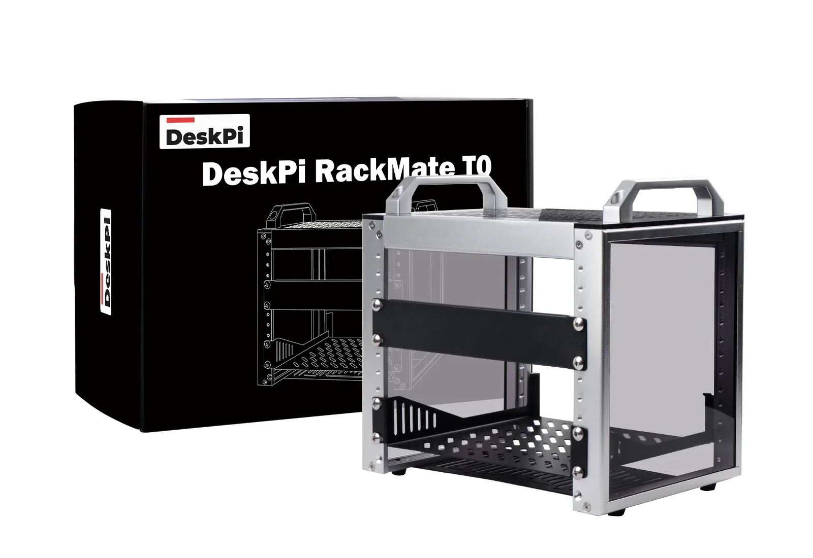
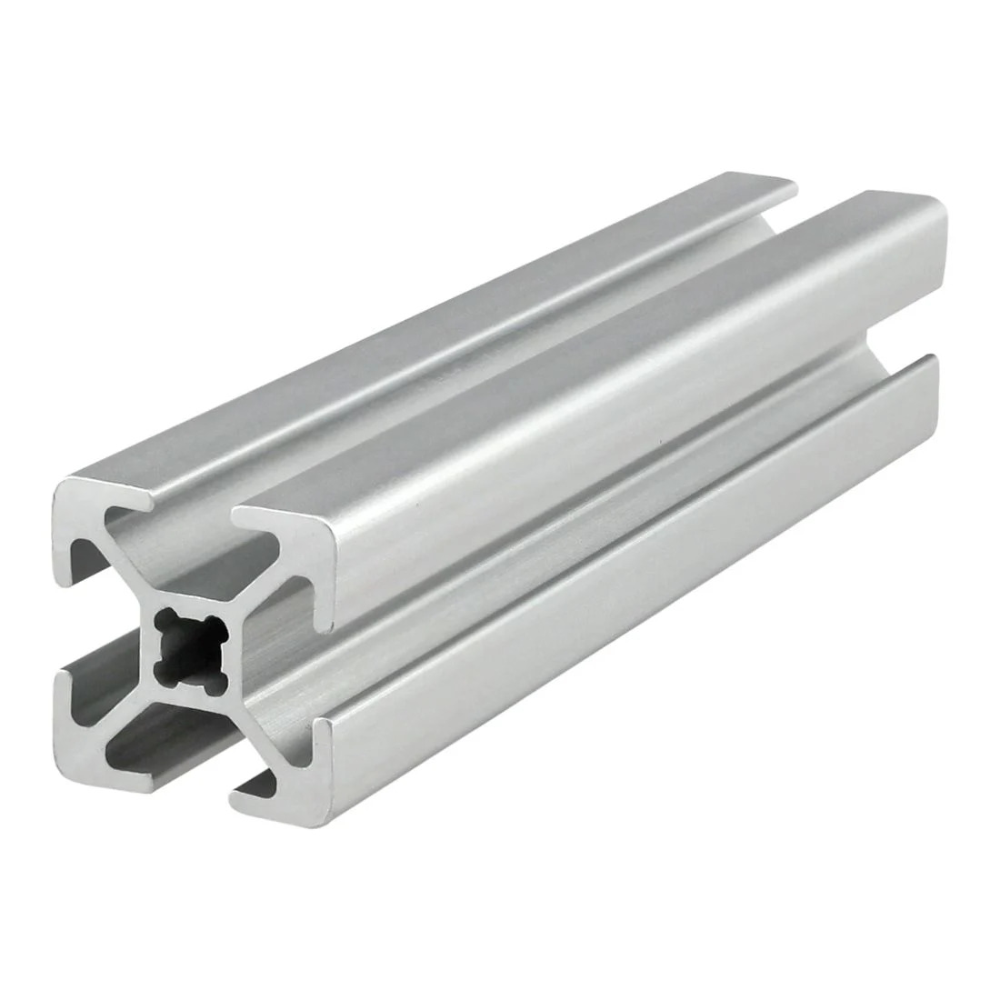
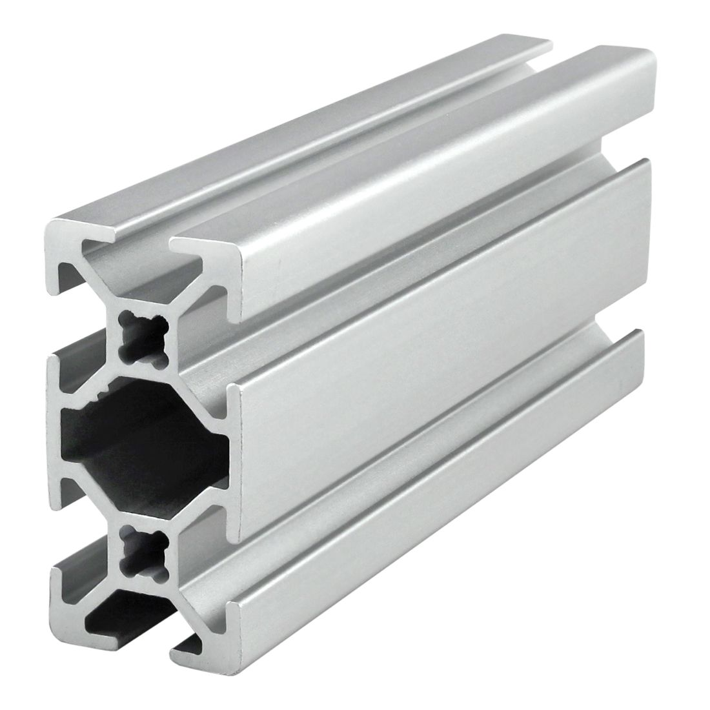
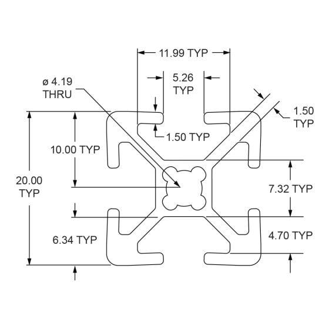
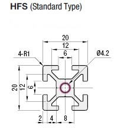
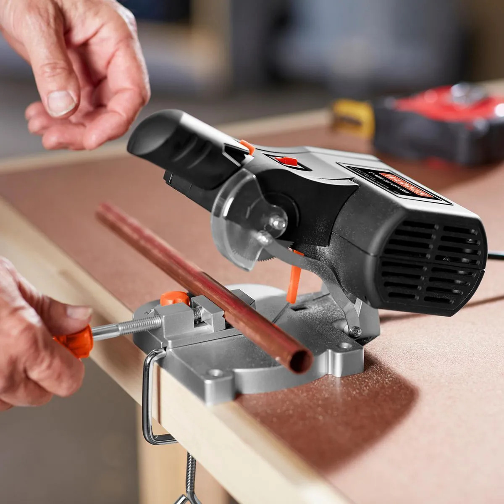
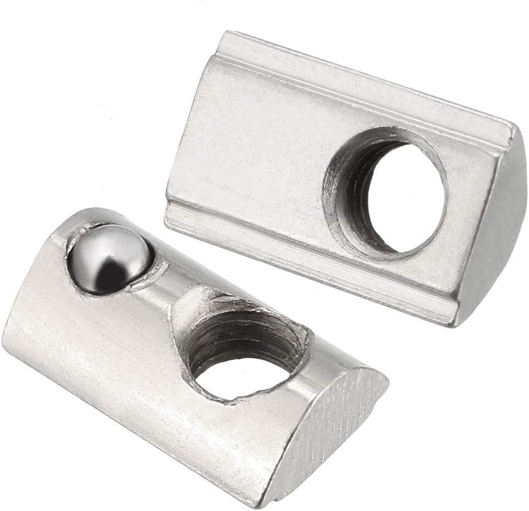

Hey! Listen! This post is part of a series on 10" mini-racks. Check them all out!
| Date | URL | Part |
|---|---|---|
| 2025-09-25 | Homelab 10" mini-rack v2 | v2 of the rack |
| 2022-09-16 | Homelab 10" mini-rack shelves | Comparison of 10" shelves |
| 2021-01-05 | Homelab 10" mini-rack | Initial post about mini-rack |
TL;DR
I built a new rack out of 20x20mm extruded aluminum. Read more to build your own!


Introduction
⚠️ WARNING ⚠️
- This is an image-heavy post (I have lazy-loading enabled, so images should only load as you scroll)
- This post has embedded 3D models (if you have WebGL enabled), so they might take a few seconds to load
- The 3D models are available to download, but they’re only accurate to the nearest whole millimeter
I’ve been using my home-made mini-rack for a few years now. My main complaint is that the shelves themselves are the horizontal structure on the front face of the unit. If I start removing them, the unit flexes. Also, the whole thing is kind of “wobbly”.

However, mini-racks have come a long way since then. DeskPi has their wildly popular RackMate line of mini-racks, and Jeff Geerling started Project MINI RACK. All of this left my home-made mini-rack feeling a little old.
I only have space for 4U, so a DeskPi Rack Mate T0 would have been perfect. However, my mini-rack sits on a very short shelf, and the RackMate T0 is too tall by about an inch, due to the large aluminum “forehead” at the top of the rack.

So naturally, I over-engineered (and over-paid for), my own rack 🤷.
Standards
As I discussed in the past, there is no standard for mini-racks. They’re generally half the size of a 19-inch rack, which would put them at 9.5-inches, but people actually refer to them as 10-inch racks, or half-racks.
Also, in my last post, I said:
I know that the imperial system of units is inferior to the metric system, but these are 10-inch racks, not 254mm racks 🤷♂️
Well, I’m eating my words now. Because of the small dimensions I’m working with, I decided to do all of my measurements in millimeters. With that said, the holes on the shelves I’m using are 237mm center-to-center, and 1U is 45mm tall, so that was my basis for the mini-rack.
Design
I’ve been seeing a ton of racks made of extruded aluminum. I guess I’m late to this, but extruded aluminum is like Lego for adults. It’s really lightweight, easy to work with, has exact dimensions, and has slots on all four sides to connect pieces, accessories, etc… The different sizes are named for their dimensions (below are examples of 20x20mm and 20x40mm, respectively).


I decided on 20x20 aluminum rails, since they are the smallest size that still has lots of third-party parts available (but I have seen rails as small as 15x15mm or 10x10mm). I decided to mount the shelves directly to the aluminum rails (in-place of traditional rack rails).
From what I can tell, 8020.net and Misumi are the biggest and/or most popular distributors, though you can also get this stuff cheap on Amazon and AliExpress. What’s nice is that since aluminum is a relatively soft metal, you can cut it with a bandsaw or chop saw. I don’t have one of those, but both 8020.net and Misumi will cut it for you (for a small fee).
Both 8020.net and Misumi have 3D building tools (and they both let you download 3D models of their products for use in other tools). 8020.net has the browser-based IdeaBuilder that lets you model almost anything in their catalog, while Misumi has Frames (I wasn’t able to use this because it is Windows-only). In IdeaBuilder, you can save your model to the cloud or a local file, and then upload the Bill of Materials (BoM) to your cart to get a list of all the parts you need. Below is what I built in just a few minutes in IdeaBuilder. If you’re interested, here is the JSON file of the model below that you can upload to IdeaBuilder to get started (this was not my final design/dimensions).

An important note is that not all 20x20 aluminum is the same. In the examples below, both are 20mm on all four sides, but the 8020.net aluminum “slot” opening is only 5.26mm wide, while the Misumi slot is 6mm wide. For example, these hidden corner brackets didn’t fit into the 20x20 aluminum from 8020.net, since the “slot” is 5.26mm, not a full 6mm. Because of that, I went with Misumi rails, since they have a wider slot, which would accept more third-party parts.


3D model
I’ve been meaning to learn some basic 3D modeling, so this was a good excuse. I didn’t need anything complicated like Autodesk Fusion360 or FreeCAD. However, an Autodesk product called Tinkercad fit the bill perfectly. The learning curve was very easy and they have great tutorials to get you started.
I built the new rack (without hardware) using Misumi’s 20x20 aluminum in Tinkercad (this is a 3D model, so you should be able to rotate/zoom below). The Tinkercad link is here, and the STL file is here if you want to download it. To save weight and make the rack shorter, I removed the two top cross-bars at the front and back (since the rack is only 4U, I don’t need that much structural stability).
For the next two items, there was no pre-existing model to import, so I had to break out the calipers and create these by hand. They’re not perfect, everything is only accurate to the nearest whole millimeter.
I modeled the shelves I was going to use (Tinkercad link here, STL file here).
I also modeled the patch panel (Tinkercad link here, STL file here).
This was my final 3D design (without hardware) with the shelves and patch panel assembled.
Here is the same design, but a screenshot of Tinkercad, so it’s easier to see the individual parts.

Presenting: The mini-rack, v2
This was the finished product and it fit together like a glove (chef’s kiss)!


I had to add an extra set of corner brackets for the top rails, since with only one set, the rails would rotate around the invisible axis that ran through the screws. The second set of brackets locks them in place.

Here is the rack loaded with gear. I purposely made the vertical aluminum pieces a little too tall, to give me some “wiggle room” for taller items to fit on the shelves.

Parts
I purchased the 20x20 aluminum from Misumi, since they could cut it for me.
| Part | Link | Quantity | Price (per unit) | Total price | Comments |
|---|---|---|---|---|---|
| 20x20 aluminum | Misumi.com | 4 | $4.90 | $19.60 | Cut to 225mm for “depth” |
| 20x20 aluminum | Misumi.com | 4 | $4.90 | $19.60 | Cut to 215mm for “height” |
| 20x20 aluminum | Misumi.com | 4 | $4.90 | $19.60 | Cut to 217mm for “width” |
| Corner brackets | Misumi.com | 16 | $1.43 | $22.88 | |
| End caps | Misumi.com | 8 | $2.55 | $20.40 | |
| Total | $102.08 |
I purchased almost all of the hardware (e.g., screws, T-nuts, etc…) from Amazon, since it was much cheaper than anything Misumi had to offer. I used hidden corner brackets for the front and back of the rack, since that’s where the shelves would load from (regular corner brackets would interfere with the shelves). Misumi makes hidden corner brackets, but they’re really expensive. Be warned, however, that the hidden corner brackets from Amazon are cast alumium, so they’re really not able to take a ton of force.
| Part | Link | Quantity | Price (per unit) | Total price | Comments |
|---|---|---|---|---|---|
| M5 spring T-nut (20-pack) | Amazon | 1 | $9.79 | $9.79 | For the shelves |
| M5 washers (75-pack) | Amazon | 1 | $8.07 | $8.07 | For the shelves |
| Hidden corner bracket (24-pack) | Amazon | 1 | $12.99 | $12.99 | For the shelves |
| M5 T-nut (50-pack) | Amazon | 1 | $8.99 | $8.99 | |
| M5 x 8.00mm hex screw (50-pack) | Amazon | 1 | $7.79 | $7.79 | |
| Total | $47.63 |
I also added these 1U parts.
| Part | Link | Quantity | Price (per unit) | Total price | Comments |
|---|---|---|---|---|---|
| 1U shelves (2-pack) | Amazon | 2 | $36.54 | $73.08 | 4 shelves total |
| 1U patch panel (12-port) | Amazon | 1 | $27.59 | $27.59 | |
| Cat6A couplers (12-pack) | Amazon | 1 | $22.11 | $22.11 | |
| Total | $122.78 |
In total, that’s $272.49 in new parts for the rack, hardware, shelves, and patch panel. That is more expensive than the DeskPi Rack Mate T0 at $79.99, but this price includes the shelves and patch panel.
Conclusion
What would I do differently next time?
First, I would buy a small chop saw. Each cut from 8020.net is $2.87, so that’s $34.44 on cuts alone. For the same price, I could buy a mini cut-off saw, purchase 20x20 aluminum in bulk from Amazon, then cut it myself.

Second, I’d probably use the spring T-nuts everywhere. The little spring-load ball detent holds the nuts in place, so they don’t slide around in the rail slots.

Third, since I purchased four shelves, and the shelf that the rack sits on is open in the back, I would mount an extra shelf on the back of the rack to give me more space for one more item.

Also, if I had more vertical space, I’d stack this thing 12U high 😅.
-Logan